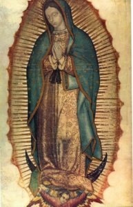
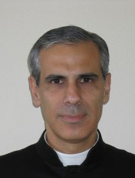

Por onde você quer começar? Encontre nos textos e nas orações do app um próximo passo para a sua vida com Deus.
Escolha um ponto de partida
Encontre uma oração ou acompanhe as palavras da Missa.
Reveja o seu dia, prepare a Confissão ou organize a vida espiritual.


Sobre
Sacerdote ordenado em 1993. Cursou o ensino médio no colégio Dante Alighieri. Engenheiro Civil formado pela Escola Politécnica da USP; doutor em Filosofia pela Pontificia Università della Santa Croce. Atende direção espiritual na igreja Sagrada Família e na igreja São João de Brito, em São Paulo.